<title>ISB Executive Education · Market intelligence</title>
<link rel="preconnect" href="https://fonts.googleapis.com">
<link rel="preconnect" href="https://fonts.gstatic.com" crossorigin>
<link rel="stylesheet" href="https://fonts.googleapis.com/css2?family=Newsreader:opsz,wght@6..72,400..700&display=swap">
<style>
/* ISB brand. Colours are the ISB colour sheet (Colour_palette.pdf, page 1), hex as printed:
     Innovation Blue #245bff, Legacy Blue #192890, Future Green #80edd9, Ivory #f4f8fa,
     Light Gray #e6ebee, Silver Gray #95a9b4, Mattle Gray #5d6f7a, State Gray #2e3b42.
   The warm colours come from the PGP sheet (page 2), used only to flag things:
     Spirited Coral #ffb172, Uplift Yellow #ffd866.
   Type: Inter (the variable "Inter V" in site/fonts) for text, Reckless for headings.
     Reckless is licensed: build_site.py serves it when its files are in site/fonts/,
     and until then headings fall back to Newsreader.
   Shape follows silverjubilee.isb.edu: square corners, flat blocks of colour, plain
     geometry, no shadows. */
:root{
  --isb:#192890; --blue:#245bff; --teal:#80edd9; --coral:#ffb172; --yellow:#ffd866;
  --ivory:#f4f8fa; --lgray:#e6ebee; --silver:#95a9b4; --mattle:#5d6f7a; --state:#2e3b42;
  --sky:var(--lgray); --sky-2:var(--silver); --mist:var(--ivory); --off:var(--ivory);
  --paper:#FFFFFF; --ink:var(--state); --ink-2:var(--mattle); --ink-3:var(--mattle); --rule:var(--lgray); --wash:var(--ivory);
  --warn:#9A4A00; --prob:#FFF6DC;
  --serif:Reckless,Newsreader,"Iowan Old Style",Georgia,serif;
  --sans:"Inter V",Inter,-apple-system,"Segoe UI",sans-serif;
  --t1:clamp(36px,5vw,56px); --t2:clamp(24px,2.8vw,30px); --t3:16px; --t4:13px;
  color-scheme:light;
}
*{box-sizing:border-box}
html,body{background:var(--paper);color:var(--ink)}
body{margin:0;font:400 var(--t3)/1.5 var(--sans);-webkit-font-smoothing:antialiased}
a{color:inherit;text-decoration:underline;text-decoration-color:var(--sky-2);text-underline-offset:3px}
a:hover{text-decoration-color:var(--blue)}
button,input,select,textarea{font:inherit;color:inherit;border-radius:0}
:focus-visible{outline:2px solid var(--blue);outline-offset:2px}
.num{font-variant-numeric:tabular-nums}
.isb{color:var(--isb);font-weight:600}
.meta{font-size:var(--t4);color:var(--ink-3)}
.wrap{max-width:1120px;margin:0 auto;padding-inline:24px}
.read{max-width:760px}

/* masthead: a flat deep-blue bar; the open tab is underlined in teal */
header.top{position:sticky;top:env(safe-area-inset-top,0px);z-index:20;background:var(--isb);color:#fff}
.mast{display:flex;align-items:center;gap:6px 22px;padding-block:12px 0;flex-wrap:wrap}
.brand{font:400 19px/1.2 var(--serif);color:#fff;text-decoration:none;white-space:nowrap;display:flex;align-items:center;gap:16px}
.brand img{height:36px;width:auto;display:block}
.brand span{padding-left:16px;border-left:1px solid rgba(255,255,255,.4);line-height:30px}
nav.main{order:3;flex-basis:100%;display:flex;gap:2px;flex-wrap:wrap;margin-top:6px}
nav.main a{text-decoration:none;font-size:15px;font-weight:500;color:#fff;padding:10px 14px 9px;border-bottom:4px solid transparent;transition:background .12s}
nav.main a:hover{background:rgba(255,255,255,.12)}
nav.main a.on{border-bottom-color:var(--teal);background:rgba(255,255,255,.08)}
body.home .find{visibility:hidden}
.find{margin-left:auto;position:relative;flex:1 1 200px;max-width:320px;min-width:160px;color:var(--ink)}
.find input{width:100%;border:0;background:#fff;padding:8px 12px;font-size:14px}
.find kbd{position:absolute;right:9px;top:8px;font:11px ui-monospace,Menlo,monospace;color:var(--ink-3)}
.hits{position:absolute;right:0;top:calc(100% + 6px);width:min(520px,92vw);background:var(--paper);border:1px solid var(--isb);
  max-height:70vh;overflow:auto;padding-block:6px}
.hits .g{font-size:12px;color:var(--ink-3);padding:8px 14px 2px}
.hits a{display:block;padding:6px 14px;text-decoration:none}
.hits a:hover,.hits a.on{background:var(--sky)}
.hits a span{display:block;font-size:12px;color:var(--ink-3)}
@media (max-width:760px){header.top{position:static}.find{order:2;flex-basis:100%;max-width:none;margin-left:0}
  body.home .find{display:none}
  .brand{font-size:15px;max-width:100%;overflow:hidden;gap:12px}.brand img{height:28px}.brand span{padding-left:12px;line-height:24px}
  nav.main{flex-wrap:nowrap;overflow-x:auto;white-space:nowrap;max-width:100%}nav.main a{font-size:14px;padding:9px 12px 8px}.find kbd{display:none}}

main{padding-block:0 80px}
h1{font:400 var(--t1)/1.02 var(--serif);letter-spacing:-.012em;color:var(--isb);margin:0 0 16px;text-wrap:balance}
h2{font:400 var(--t2)/1.12 var(--serif);color:var(--blue);margin:0 0 6px;text-wrap:balance}
p{margin:0 0 12px}
section{margin-top:56px;scroll-margin-top:110px}
section>header{border-top:2px solid var(--isb);padding-top:12px;margin-bottom:18px;display:flex;align-items:baseline;gap:14px;flex-wrap:wrap}
.kicker{font-size:var(--t4);color:var(--ink-3);margin-bottom:22px}

/* the band that opens every page: a full-width block of light blue with plain geometry on the right */
.band{position:relative;background:var(--sky);box-shadow:0 0 0 100vmax var(--sky);clip-path:inset(0 -100vmax);
  padding-block:44px 40px;margin-bottom:36px}
.band>*{position:relative;z-index:1}
.band .motif{position:absolute;z-index:0;right:0;top:50%;transform:translateY(-50%);height:100%;max-height:300px;width:auto;pointer-events:none}
.band h1{max-width:760px}
.band .lead{max-width:740px}
.band .crumb{font-size:14px;color:var(--isb);margin-bottom:14px}
.band .crumb a{text-decoration-color:var(--blue)}
@media (max-width:1100px){.band .motif{display:none}}

.lead{font:400 clamp(17px,1.9vw,19px)/1.45 var(--sans);margin:0 0 8px;text-wrap:pretty}
.lead b{font-weight:600;color:var(--isb)}
/* the brief: one statement per block */
.st{padding-block:22px;border-top:1px solid var(--rule)}
.st.first{border-top:0;padding-top:4px}
.st .say{font:400 clamp(21px,2.4vw,25px)/1.25 var(--serif);color:var(--ink);margin:0 0 6px;text-wrap:pretty}
.st .say b{font-weight:600;color:var(--isb)}
.st.first .say{font-size:clamp(27px,3.4vw,36px);line-height:1.15;color:var(--isb)}
/* a link that asks to be followed: serif, bold, underlined in orange */
a.go{display:inline-block;font:700 16px/1.2 var(--serif);letter-spacing:.01em;color:var(--isb);text-decoration:none;
  border-bottom:3px solid var(--coral);padding-bottom:3px;margin-top:4px}
a.go:hover{color:var(--blue)}
.doors{display:grid;grid-template-columns:repeat(auto-fit,minmax(210px,1fr));gap:0;margin-top:48px}
.doors a{text-decoration:none;display:block;padding:22px 20px;background:var(--mist);border-top:6px solid var(--blue)}
.doors a:nth-child(2n){background:var(--sky);border-top-color:var(--isb)}
.doors a b{display:block;font:400 22px/1.15 var(--serif);color:var(--isb);margin-bottom:6px}
.doors a:hover{background:var(--sky-2)}
.doors a span{font-size:14px;color:var(--ink-2)}

/* rows: the one list pattern used everywhere */
.rows{border-top:1px solid var(--rule)}
.r{display:grid;grid-template-columns:var(--cols,minmax(0,1fr) 110px 110px 90px 90px);gap:14px;align-items:baseline;
  padding:10px 0;border-bottom:1px solid var(--rule);text-decoration:none}
a.r:hover,.r[data-go]:hover{background:var(--mist)}
.r[data-go]{cursor:pointer}
/* a programme's name opens its own page at the school, in a new tab */
a.ext{text-decoration-color:var(--blue);text-decoration-thickness:1px}
a.ext::after{content:"↗";display:inline-block;margin-left:3px;font-size:.72em;color:var(--blue);text-decoration:none}
.golinks{display:flex;gap:10px 20px;flex-wrap:wrap;align-items:center;margin:6px 0 20px;font-size:15px}
.golinks a.go1{text-decoration:none;background:var(--isb);color:#fff;font-weight:600;padding:11px 20px}
.golinks a.go1:hover{background:var(--blue)}
.golinks a.go1::after{color:var(--teal)}
/* a programme whose page is gone or that has no future run: kept, but marked */
.mark.gone{font:600 12px var(--sans);color:var(--warn)}
.explain.gone{border-left:4px solid var(--coral)}
.r .n{font-weight:500;line-height:1.35;font-size:16px}
.r .s{font-size:var(--t4);color:var(--ink-3);margin-top:2px}
.r .c{font-size:14px;color:var(--ink-2);font-variant-numeric:tabular-nums}
.r.hd{font-size:12px;color:var(--ink-3);padding-block:6px;letter-spacing:.02em}
.r.isbrow{box-shadow:inset 4px 0 0 var(--blue);padding-left:12px}
.r.isbrow .n{color:var(--isb);font-weight:600}
.r.prob{background:var(--prob)}
details.r{display:block}
details.r>summary{display:grid;grid-template-columns:var(--cols);gap:14px;align-items:baseline;cursor:pointer;list-style:none}
details.r>summary::-webkit-details-marker{display:none}
.mark{font:500 12px var(--sans);color:var(--ink-3);margin-left:8px;white-space:nowrap}
@media (max-width:760px){.r,details.r>summary{grid-template-columns:minmax(0,1fr) auto}.r .hm{display:none}.r.hd{display:none}}

/* controls */
.tools{display:flex;gap:10px 18px;align-items:center;flex-wrap:wrap;margin-bottom:14px;font-size:14px}
.tabs{display:flex;gap:6px;flex-wrap:wrap}
.tabs button{appearance:none;cursor:pointer;border:1px solid var(--isb);background:var(--paper);color:var(--isb);padding:8px 14px;font-size:14px;font-weight:500}
.tabs button:hover{background:var(--sky)}
.tabs button.on{background:var(--isb);color:#fff}
.tabs button .meta{color:inherit;opacity:.75}
select,input[type=text],input[type=number],input[type=search],textarea{border:1px solid var(--rule);background:var(--paper);padding:7px 10px;font-size:14px;max-width:100%}
label.ck{display:inline-flex;gap:6px;align-items:center;color:var(--ink-2)}
.lnk{appearance:none;border:0;background:none;padding:0;cursor:pointer;text-decoration:underline;text-underline-offset:3px;text-decoration-color:var(--sky-2);font-size:14px;color:var(--isb)}
.btn{appearance:none;border:0;cursor:pointer;background:var(--isb);color:#fff;font-weight:600;font-size:16px;padding:0 26px}
.btn:hover{background:var(--blue)}
.chips{display:flex;gap:8px;flex-wrap:wrap;align-items:center;font-size:14px;color:var(--ink-2)}
.chip{appearance:none;border:0;cursor:pointer;background:#fff;color:var(--isb);padding:7px 13px;font-size:14px;font-weight:500;text-decoration:none}
.chip:hover{background:var(--isb);color:#fff}
.pill{border:1px solid var(--rule);background:var(--paper);padding:8px 12px;font-size:14px;color:var(--ink);cursor:pointer}
.pill.on{border-color:var(--isb);background:var(--sky);color:var(--isb);font-weight:500}
label.pillck{display:inline-flex;align-items:center;gap:7px;border:1px solid var(--rule);padding:7px 12px;font-size:14px;cursor:pointer}
label.pillck.on{border-color:var(--isb);background:var(--sky);color:var(--isb);font-weight:500}
.newtag{display:inline-block;font:600 11.5px/1 var(--sans);color:var(--isb);background:var(--teal);padding:4px 7px;margin-left:8px;vertical-align:2px;white-space:nowrap}
.newtag.prob{background:var(--coral)}
.explain{font-size:14px;color:var(--ink-2);background:var(--mist);border-left:4px solid var(--blue);padding:12px 16px;margin:14px 0;max-width:760px}
.steps{display:flex;gap:10px 26px;flex-wrap:wrap;margin:14px 0 0;font-size:15px}
.steps span b{display:inline-flex;align-items:center;justify-content:center;width:26px;height:26px;background:var(--isb);color:#fff;font-size:13px;margin-right:8px}

/* home */
.about{margin:0 0 30px;max-width:740px}
.about .tagline{font:400 clamp(30px,4.4vw,48px)/1.02 var(--serif);letter-spacing:-.012em;color:var(--isb);margin:0 0 14px;text-wrap:balance}
.about p{font:400 clamp(17px,1.9vw,19px)/1.45 var(--sans);color:var(--isb);margin:0}
.about p.small{font-size:15px;color:var(--ink-2);margin-top:10px}
.band h1.sub{font-size:clamp(26px,3vw,32px);color:var(--blue);margin-bottom:6px}
.big{display:flex;gap:0;margin:20px 0 14px;max-width:740px}
.big input{flex:1;min-width:0;font-size:18px;padding:15px 18px;border:2px solid var(--isb);border-right:0;background:#fff}

/* facts */
.facts{display:grid;grid-template-columns:repeat(auto-fit,minmax(170px,1fr));gap:14px 28px;margin:22px 0}
.facts div{border-top:2px solid var(--sky-2);padding-top:8px}
.facts dt{font-size:12px;color:var(--ink-3)}
.facts dd{margin:2px 0 0;font-size:15px}
.facts dd.none{color:var(--ink-3);font-style:italic}

/* school tiles */
.tiles{display:grid;grid-template-columns:repeat(auto-fill,minmax(300px,1fr));gap:18px}
.tile{display:flex;flex-direction:column;gap:12px;text-decoration:none;background:var(--paper);border:1px solid var(--rule);border-top:8px solid var(--blue);padding:20px 20px 18px;transition:background .12s}
.tile:hover{background:var(--mist);border-color:var(--blue);border-top-color:var(--isb)}
.tile.home{border-top-color:var(--isb);background:var(--mist)}
.tile h3{font:400 26px/1.08 var(--serif);color:var(--isb);margin:0}
.tile .big-n{font:400 15px/1.3 var(--sans);color:var(--ink-2)}
.tile .big-n b{font:400 34px/1 var(--serif);color:var(--blue);margin-right:6px}
.tile .foc{font-size:14px;color:var(--ink-2);margin:0}
.tile .foc b{font-weight:600;color:var(--ink)}
.tile .open{margin-top:auto;font:700 15px/1.2 var(--serif);color:var(--isb);border-bottom:3px solid var(--coral);align-self:flex-start;padding-bottom:2px}
/* how a catalogue splits by delivery: one flat bar, labelled underneath */
.mixbar{display:flex;height:12px;background:var(--off)}
.mixbar i{display:block;height:100%}
.mixkey{display:flex;flex-wrap:wrap;gap:4px 14px;font-size:13px;color:var(--ink-2)}
.mixkey span{white-space:nowrap}
.mixkey i{display:inline-block;width:10px;height:10px;margin-right:5px;vertical-align:-1px}
.k-Csuite{background:#192890}.k-Blended{background:#245bff}.k-Liveonline{background:#80edd9}.k-TFPcampus{background:#ffb172}
.k-TFPonline{background:#ffd866}.k-Longcampus{background:#8685e0}.k-Selfpaced{background:#5d6f7a}.k-Notpublished{background:#e6ebee;box-shadow:inset 0 0 0 1px #c9d2dc}
.medt{display:grid;grid-template-columns:minmax(0,1fr) auto auto;gap:3px 12px;font-size:13px;color:var(--ink-2);align-items:baseline}
.medt i{display:inline-block;width:10px;height:10px;margin-right:6px;vertical-align:-1px}
.medt b{font-weight:600;color:var(--ink);text-align:right;font-variant-numeric:tabular-nums}.medt em{font-style:normal;color:var(--ink-3);text-align:right;font-size:12px}
.medt .h{font-size:11.5px;color:var(--ink-3);letter-spacing:.03em;text-transform:uppercase}

/* a ranked list of bars: themes on a school page, themes and levels of launches */
.bars{display:grid;gap:0}
.bars .b{display:grid;grid-template-columns:minmax(150px,280px) 1fr 40px;gap:12px;align-items:center;padding:6px 0;border-bottom:1px solid var(--rule);
  font-size:14px;text-align:left;appearance:none;border-width:0 0 1px;background:none;cursor:pointer;width:100%;color:var(--ink)}
.bars .b:hover{background:var(--mist)}
.bars .b.on{background:var(--sky);font-weight:600;color:var(--isb)}
.bars .tr{display:flex;height:12px}
.bars .tr i{display:block;height:100%;background:var(--blue)}
.bars .tr i.alt{background:var(--sky-2)}
.bars .b .n{text-align:right;font-variant-numeric:tabular-nums;color:var(--ink-2)}
.cols2{display:grid;grid-template-columns:minmax(0,3fr) minmax(0,2fr);gap:20px 48px;align-items:start}
.cols2 h3{font:600 13px/1.3 var(--sans);letter-spacing:.04em;text-transform:uppercase;color:var(--ink-3);margin:0 0 8px}
@media (max-width:860px){.cols2{grid-template-columns:1fr}}
@media (max-width:560px){.bars .b{grid-template-columns:120px 1fr 32px;font-size:12.5px}}

/* charts */
svg text{font:12px var(--sans);fill:var(--ink-3)}
.strip{width:100%;height:auto;display:block;margin:6px 0 4px}

/* test a programme */
.test{display:grid;grid-template-columns:300px minmax(0,1fr);gap:48px;align-items:start}
.test form{display:flex;flex-direction:column;gap:14px;position:sticky;top:120px}
.test label{display:flex;flex-direction:column;gap:4px;font-size:13px;color:var(--ink-2)}
.test .two{display:grid;grid-template-columns:minmax(0,1fr) minmax(0,1fr);gap:10px}
.test input,.test select,.test textarea{width:100%;min-width:0}
@media (max-width:860px){.test{grid-template-columns:1fr;gap:28px}.test form{position:static}}

details.fold{border-top:1px solid var(--rule);padding-top:10px;margin-top:22px}
details.fold summary{cursor:pointer;color:var(--isb);font-size:14px}
.scroll{overflow-x:auto}
footer{background:var(--isb);box-shadow:0 0 0 100vmax var(--isb);clip-path:inset(0 -100vmax);color:rgba(255,255,255,.78);
  margin-top:72px;padding-block:26px 40px;font-size:13px}
footer p{max-width:86ch}
footer a{color:#fff;text-decoration-color:var(--teal)}
@media (prefers-reduced-motion:reduce){*{transition:none!important}}
</style>

<header class="top">
  <div class="wrap mast">
    <a class="brand" href="#/" aria-label="ISB Executive Education, market intelligence"><span>Market intelligence</span></a>
    <nav class="main" id="nav">
      <a href="#/">Search programmes</a><a href="#/schools/india">Indian schools</a><a href="#/schools/global">Global schools</a>
      <a href="#/launches">New launches</a><a href="#/test">Test a programme idea</a><a href="#/brief">Weekly brief</a>
    </nav>
    <div class="find" role="search">
      <input type="search" id="find" placeholder="Find a topic, programme or school" aria-label="Find" autocomplete="off">
      <kbd>/</kbd>
      <div class="hits" id="hits" hidden></div>
    </div>
  </div>
</header>

<main class="wrap" id="view"></main>

<footer class="wrap" id="foot"></footer>

<script>
const D = __DATA__;
/* ---------- basics ---------- */
const $=id=>document.getElementById(id);
const esc=s=>String(s??"").replace(/[&<>"]/g,c=>({"&":"&amp;","<":"&lt;",">":"&gt;",'"':"&quot;"}[c]));
const SC=Object.fromEntries(D.schools.map(s=>[s.s,s]));
const T=Object.fromEntries(D.topics.map(t=>[t.id,t]));
D.progs.forEach((p,i)=>p.i=i);
const LV=l=>l==="Senior"?"C-suite/Senior":l;
const median=a=>{if(!a.length)return null;const s=[...a].sort((x,y)=>x-y),m=s.length>>1;return s.length%2?s[m]:(s[m-1]+s[m])/2;};
const lakh=v=>v==null?"not published":v>=1e7?"₹"+(v/1e7).toFixed(2)+" Cr":"₹"+(v/1e5).toFixed(v<1e6?2:1)+" L";
const wk=w=>w==null?"not published":w<1?Math.round(w*5)+" days":w<9?(+w.toFixed(1))+" weeks":Math.round(w/4.33)+" months";
const fmtD=s=>{if(!s)return"";const d=new Date((s.length===7?s+"-01":s)+"T00:00:00");return isNaN(d)?s:
  d.toLocaleDateString("en-GB",s.length===7?{month:"short",year:"numeric"}:{day:"numeric",month:"short",year:"numeric"});};
const addM=(iso,m)=>{const d=new Date(iso+"T00:00:00");d.setMonth(d.getMonth()+m);return d.toISOString().slice(0,10);};
const words=q=>q.toLowerCase().split(/[\s,]+/).filter(Boolean);
const ALIAS={cfo:"chief financial",ceo:"chief executive",cmo:"chief marketing",cto:"chief technology",coo:"chief operat",
  chro:"chief human",cso:"chief strategy",cdo:"chief digital",caio:"chief ai",hr:"human resource",pe:"private equity",
  vc:"venture capital",esg:"sustainab",gm:"general management"};
const has=(hay,w)=>hay.includes(w)||(ALIAS[w]&&hay.includes(ALIAS[w]));
const hit=(hay,q)=>words(q).every(w=>has(hay,w));
const plural=(n,a,b)=>`${n} ${n===1?a:(b||a+"s")}`;
const isAI=s=>/\bai\b|artificial intelligence|agentic|gen ?ai|generative/i.test(s);
const count=(l,f)=>{const m=new Map();l.forEach(x=>{const k=f(x);if(k)m.set(k,(m.get(k)||0)+1);});return [...m].sort((a,b)=>b[1]-a[1]);};
const andList=a=>a.length<2?a.join(""):a.slice(0,-1).join(", ")+" and "+a[a.length-1];
const FORMATS=["Campus","Blended","Live Online","Online","Self-paced Online"];
const LEVELS=["C-suite/Senior","Board","Mid-career","Functional specialist","Early/Emerging","Mixed"];
const GRP={India:"Indian schools",Global:"Global schools",Platform:"Platforms"};
// every programme has exactly one type (build_data.py), so a C-suite programme
// never appears again under its format. Order is fixed everywhere.
const TYL={"C-suite":["C-suite (CXO) programmes","C-suite","C-suite programmes"],"Blended":["Blended programmes","Blended","blended"],
  "Live online":["Live online, 12 weeks or more","Live online","live online"],"TFP campus":["Topic-focused programmes (TFP) on campus","TFP campus","topic-focused on campus"],
  "TFP online":["Topic-focused programmes (TFP) online","TFP online","topic-focused online"],"Long campus":["Long campus programmes","Long campus","long campus"],
  "Self-paced":["Self-paced online","Self-paced","self-paced"],"Not published":["Format not published","Not published","with no format published"]};
const KINDS=D.types.map(k=>[k,TYL[k][0],TYL[k][1],TYL[k][2]]);
const kindOf=p=>p.ty;
const kcls=k=>"k-"+k.replace(/[^A-Za-z]/g,"");
const TYDEF=`<b>C-suite (CXO)</b>: named for a C-suite role, or filed under C-suite by the school, whatever the format; counted only here. <b>Topic-focused programmes (TFP)</b>: short programmes on one topic, up to two weeks of contact on campus or under 12 weeks online. <b>Live online</b>: online programmes of 12 weeks or more, taught live or as a cohort. <b>Long campus</b>: campus programmes longer than two weeks. <b>Self-paced</b>: enrol any time, no cohort. Medians are of published fees, converted to rupees at fixed planning rates.`;
// where a programme's name takes you: its landing page, else its page in the
// school's catalogue, else its brochure. Never a news article or a listing site.
const LINKS={lu:"Landing page",u:"Programme page",bu:"Brochure"};
const links=p=>Object.keys(LINKS).filter(k=>p[k]).map(k=>[LINKS[k],p[k]]);
const ext=(u,t,cls="ext")=>`<a class="${cls}" href="${esc(u)}" target="_blank" rel="noopener">${t}</a>`;
const nameLink=p=>{const l=links(p)[0];return l?ext(l[1],esc(p.n)):esc(p.n);};
const goneTag=p=>p.gone?`<span class="mark gone" title="${esc(p.gone)}">likely discontinued</span>`:"";
// "demand" said in words: the score is how much published research says
// employers and executives need this (2 per independent report up to 5,
// 1 per region, 2 if it concerns senior people)
const DEM=t=>t.dem>=13?"Strong":t.dem>=8?"Moderate":t.dem>0?"Some":"No";
const demText=t=>t.dem?`${DEM(t)} demand, from ${plural(t.srcs,"independent report")}`:"No published research found";
const DEM_EXPLAIN=`<b>What “demand” means here.</b> How strongly published research (World Economic Forum, LinkedIn, Naukri, employer surveys, regulators) says employers and executives need this skill. <i>Strong</i> means several independent reports across regions say so; <i>some</i> means one or two. It is not ISB enrolment data.`;

/* the geometry that sits on the right of every page's opening band: flat
   squares, quarter circles, a diamond grid and a dot grid in the brand blues */
const MOTIF=`<svg class="motif" viewBox="0 0 270 300" aria-hidden="true">
  <rect x="0" y="0" width="150" height="150" fill="#95a9b4"/>
  <path d="M150 150a150 150 0 0 1-150 150V150z" fill="#245bff"/>
  <rect x="150" y="150" width="120" height="150" fill="#192890"/>
  <path d="M150 0h120v120a120 120 0 0 1-120-120z" fill="#245bff"/>
  <g fill="#f4f8fa">${[0,1,2].map(i=>[0,1].map(j=>`<path d="M${36+i*36} ${22+j*36}l16 16-16 16-16-16z"/>`).join("")).join("")}</g>
  <g fill="#ffb172">${[0,1,2].map(i=>[0,1].map(j=>`<circle cx="${20+i*15}" cy="${118+j*15}" r="3.6"/>`).join("")).join("")}</g>
  <g fill="#80edd9">${[0,1,2].map(i=>[0,1,2].map(j=>`<circle cx="${188+i*15}" cy="${196+j*15}" r="3.6"/>`).join("")).join("")}</g>
</svg>`;
const band=h=>`<div class="band">${MOTIF}${h}</div>`;

/* closest peer programmes: same topic first, then secondary, then sub-theme;
   format, level and length break ties */
function closest(p,k=10){
  const t=T[p.t];
  return D.progs.filter(q=>q.sc!==p.sc&&q!==p).map(q=>{const u=T[q.t];let s=0;
    if(q.t===p.t)s+=4;else if(q.sec===p.t||q.t===p.sec)s+=3;else if(u.st===t.st)s+=2;else return null;
    if(q.f===p.f)s+=1; if(LV(q.lv)===LV(p.lv)&&p.lv!=="Unknown")s+=1;
    if(p.w&&q.w){const r=Math.max(p.w,q.w)/Math.min(p.w,q.w);s+=r<1.5?1.5:r<3?.5:0;}
    return [s,q];}).filter(Boolean).sort((a,b)=>b[0]-a[0]).slice(0,k).map(x=>x[1]);
}
// ISB's presence on a topic: programmes sold as it, and programmes that only
// teach it as a module
function isbOn(id){const a=D.progs.filter(p=>p.sc==="isb");return {sold:a.filter(p=>p.t===id),part:a.filter(p=>p.t!==id&&p.sec===id)};}
const isbSay=o=>o.sold.length?`ISB already sells ${plural(o.sold.length,"programme")} here.`:o.part.length?`ISB covers it only as a module, inside ${plural(o.part.length,"programme")} sold as something else.`:"ISB sells nothing here.";

// the type a proposed programme would get, by the same rules as build_data.py
const typeOf=(f,w)=>f==="Blended"?"Blended":f==="Online"?(w!=null&&w>=12?"Live online":"TFP online")
  :f==="Live Online"?(w!=null&&w<12?"TFP online":"Live online"):f==="Campus"?(w!=null&&w>2?"Long campus":"TFP campus"):f==="Self-paced Online"?"Self-paced":"Not published";
// peers for a fee comparison: the closest programmes in one region, kept to the same
// programme type when at least three exist, so a 3-day course is not priced against a 1-year one
function feePeers(p,region,k=10){
  const c=closest(p,400).filter(q=>q.sc!=="isb"&&SC[q.sc].r===region), same=c.filter(q=>q.ty===p.ty);
  const out=(same.length>=3?same:c).slice(0,k); out.same=same.length>=3; return out;
}
/* price strip: one dot per programme on a log scale of INR, ISB in blue */
function strip(list,mark){
  const pts=list.filter(p=>p.inr).map(p=>({v:p.inr,isb:p.sc==="isb",n:p.n,s:SC[p.sc]?SC[p.sc].l:""}));
  if(mark) pts.push({v:mark,me:1});
  if(pts.length<2) return "";
  const lo=Math.min(...pts.map(p=>p.v))*0.8, hi=Math.max(...pts.map(p=>p.v))*1.25, W=720,H=64,L=10,R=10;
  const x=v=>L+(W-L-R)*(Math.log(v)-Math.log(lo))/(Math.log(hi)-Math.log(lo));
  const ticks=[5e4,1e5,2.5e5,5e5,1e6,2.5e6,5e6,1e7].filter(v=>v>lo&&v<hi);
  const med=median(pts.filter(p=>!p.me&&!p.isb).map(p=>p.v));
  const anc=v=>x(v)<90?"start":x(v)>W-90?"end":"middle";
  return `<svg class="strip" viewBox="0 0 ${W} ${H}" role="img" aria-label="Fees of ${pts.length} programmes on a log scale">
    <line x1="${L}" x2="${W-R}" y1="30" y2="30" stroke="var(--rule)"/>
    ${ticks.map(v=>`<line x1="${x(v)}" x2="${x(v)}" y1="26" y2="34" stroke="var(--rule)"/><text x="${x(v)}" y="54" text-anchor="middle">${v>=1e7?"₹"+v/1e7+"Cr":"₹"+v/1e5+"L"}</text>`).join("")}
    ${med?`<line x1="${x(med)}" x2="${x(med)}" y1="14" y2="38" stroke="var(--ink-2)" stroke-dasharray="2 2"/><text x="${x(med)}" y="10" text-anchor="${anc(med)}" style="fill:var(--ink-2)">typical fee ${lakh(med)}</text>`:""}
    ${pts.filter(p=>!p.isb&&!p.me).map(p=>`<circle cx="${x(p.v)}" cy="30" r="4" fill="var(--ink-3)" fill-opacity=".5"><title>${esc(p.s)}: ${esc(p.n)} · ${lakh(p.v)}</title></circle>`).join("")}
    ${pts.filter(p=>p.isb).map(p=>`<circle cx="${x(p.v)}" cy="30" r="5.5" fill="var(--blue)" stroke="var(--paper)" stroke-width="2"><title>ISB: ${esc(p.n)} · ${lakh(p.v)}</title></circle>`).join("")}
    ${pts.filter(p=>p.me).map(p=>`<circle cx="${x(p.v)}" cy="30" r="7" fill="var(--teal)" stroke="var(--isb)" stroke-width="2.5"><title>Your proposal · ${lakh(p.v)}</title></circle>`).join("")}
  </svg>`;
}

/* one row pattern for programmes everywhere */
const COMPACT="--cols:minmax(0,1fr) 92px 78px 70px";
function progRow(p,opt={}){
  const s=SC[p.sc];
  const sub=[opt.noSchool?"":esc(s.l),p.pt?`with ${esc(p.pt)}`:"",p.sc==="isb"&&p.cat?`ISB: ${esc(p.cat)}`:"",opt.topic?esc(T[p.t].n):""].filter(Boolean).join(" · ");
  return `<div class="r ${p.sc==="isb"&&!opt.noSchool?"isbrow":""}" data-go="#/p/${p.i}" tabindex="0" style="${opt.compact?COMPACT:""}">
    <span><div class="n">${nameLink(p)}${newTag(p.launch)}${p.new?'<span class="mark">added this month</span>':""}${goneTag(p)}</div>
      <div class="s">${sub}</div></span>
    <span class="c hm">${esc({"Self-paced Online":"Self-paced","Online":"Online cohort"}[p.f]||p.f)}</span><span class="c hm">${wk(p.w)}</span>
    <span class="c">${p.inr?lakh(p.inr):"—"}</span>${opt.compact?"":`<span class="c hm">${p.ns?fmtD(p.ns):"—"}</span>`}</div>`;
}
const progHead=(c)=>c?`<div class="r hd" style="${COMPACT}"><span>Programme</span><span>Format</span><span>Duration</span><span>Fee</span></div>`
  :`<div class="r hd"><span>Programme</span><span>Format</span><span>Duration</span><span>Fee</span><span>Next start</span></div>`;

/* ---------- the brief ---------- */
function pricePositions(){
  return D.progs.filter(p=>p.sc==="isb"&&p.inr).map(p=>{const f=feePeers(p,"India").map(q=>q.inr).filter(Boolean);
    return f.length>=3?{p,med:median(f),n:f.length,gap:100*(p.inr/median(f)-1)}:null;}).filter(Boolean);
}
function brief(){
  const L=D.launches, out=[];
  if(L){
    const r3=L.rows.filter(r=>r.eff&&r.eff>=addM(L.asof,-3));
    const ai=r3.filter(r=>isAI(r.n)).length, th=count(r3,r=>r.th).slice(0,2);
    const who=[...new Set(r3.map(r=>SC[r.sc].l))];
    out.push({h:`Other schools launched <b>${plural(r3.length,"new programme")}</b> in the three months to ${fmtD(L.asof)}${th.length?`, most of them in ${andList(th.map(([t,n])=>`${esc(t)} (${n})`))}`:""}.`,
      d:`${who.join(", ")}.${ai?` ${ai} of the ${r3.length} name AI in the title.`:""}`,go:["#/launches?w=3","See the launches"]});
  }
  const isb=D.progs.filter(p=>p.sc==="isb");
  const open=D.topics.filter(t=>!t.isb&&!isbOn(t.id).part.length&&t.dem>=13).sort((a,b)=>b.dem-a.dem||a.peers-b.peers), o1=open[0];
  if(o1) out.push({h:`The strongest demand ISB does not serve is <b>${esc(o1.n)}</b>: ${plural(o1.srcs,"independent report")} say employers need it, and ${o1.peers?`${plural(o1.peers,"other school")} ${o1.peers===1?"sells":"sell"} it`:"no school we track sells it"}.`,
    d:`${open.length-1} more topics show strong demand and have no ISB programme.`,go:[`#/topic/${o1.id}`,"Open the topic"]});
  const def=D.topics.filter(t=>t.isb).sort((a,b)=>b.peers-a.peers)[0];
  if(def) out.push({h:`ISB's most contested ground is <b>${esc(def.n)}</b>: ${plural(def.isb,"ISB programme")} against ${def.peers} other schools.`,
    d:`Published research shows ${DEM(def).toLowerCase()} demand for it (${plural(def.srcs,"independent report")}).`,go:[`#/topic/${def.id}`,"See who sells it"]});
  const zero=D.themes.filter(th=>!isb.some(p=>T[p.t].th===th));
  if(zero.length){const n=D.progs.filter(p=>zero.includes(T[p.t].th)).length;
    out.push({h:`ISB sells nothing in <b>${zero.join("; ").replace(/; ([^;]*)$/," or $1")}</b>, where other schools sell ${n} programmes.`,
      d:`Every other theme has at least one ISB programme.`,go:[`#/?th=${encodeURIComponent(zero[0])}`,"See who sells there"]});}
  const pp=pricePositions().sort((a,b)=>b.gap-a.gap);
  if(pp.length){const above=pp.filter(x=>x.gap>0).length;
    out.push({h:`On <b>${above} of ${pp.length}</b> ISB programmes with a published fee, ISB charges more than the median of its closest Indian peers.`,
      d:`Widest gap: ${esc(pp[0].p.n)}, ${Math.round(pp[0].gap)}% above.`,go:["#/school/isb","See ISB's programmes"]});}
  const c=D.changes;
  if(c){const isbA=c.added.filter(x=>x[0]==="isb").length, pa=c.added.length-isbA;
    const bits=[isbA&&`ISB added ${isbA} programmes`,pa&&`other schools added ${pa}`,c.dropped.length&&`${c.dropped.length} dropped`,c.repriced.length&&`${c.repriced.length} repriced`].filter(Boolean);
    out.push({h:`Since ${fmtD(c.since)}: ${bits.length?bits.join(", "):"no catalogue changes"}.`,d:`The catalogue refreshes every Monday. Next: ${esc(D.whatsnew.next)}.`,go:["#/updates","See all updates"]});}
  $("view").innerHTML=band(`<h1>Weekly brief</h1>
    <p class="lead">What changed in the market and what it means for ISB. ${D.progs.length.toLocaleString("en-IN")} programmes from ISB and ${D.schools.length-1} other schools and platforms, refreshed ${esc(D.whatsnew.ran)}.</p>`)+
  `<div class="read">
    ${out.map((s,i)=>`<div class="st ${i?"":"first"}"><p class="say">${s.h}</p><p class="meta">${s.d}</p><a class="go" href="${s.go[0]}">${s.go[1]} →</a></div>`).join("")}
  </div>
  <div class="doors">
    <a href="#/"><b>Search programmes</b><span>Find any of ${D.progs.length.toLocaleString("en-IN")} programmes by topic, role, school or keyword.</span></a>
    <a href="#/schools/india"><b>Indian schools</b><span>Each school's full catalogue: C-suite, blended, live online and topic-focused programmes.</span></a>
    <a href="#/schools/global"><b>Global schools</b><span>The same view for the eight global schools we track.</span></a>
    <a href="#/test"><b>Test a programme idea</b><span>See who already sells something similar, at what price, and whether there is demand.</span></a>
  </div>`;
}

/* ---------- topic ---------- */
function topic(id){
  const t=T[id]; if(!t) return notFound();
  const all=D.progs.filter(p=>p.t===id||p.sec===id), isb=all.filter(p=>p.sc==="isb"), peers=all.filter(p=>p.sc!=="isb");
  const grp=g=>peers.filter(p=>SC[p.sc].g===g).sort((a,b)=>(b.inr||0)-(a.inr||0));
  const f=peers.map(p=>p.inr).filter(Boolean);
  $("view").innerHTML=band(`<p class="crumb"><a href="#/?th=${encodeURIComponent(t.th)}">${esc(t.th)}</a> · ${esc(t.st)}${t.ai!=="Stable"?" · AI-era topic":""}</p>
    <h1>${esc(t.n)}</h1>
    <p class="lead">${t.peers?`${plural(t.peers,"other school")} ${t.peers===1?"sells":"sell"} this`:"No other school we track sells this"}. ${isbSay(isbOn(id))} ${demText(t)}.</p>`)+
    `<dl class="facts">
      <div><dt>Market demand</dt><dd>${demText(t)}</dd></div>
      <div><dt>Other schools selling it</dt><dd>${t.peers||"none"}</dd></div>
      <div><dt>ISB</dt><dd class="${isb.length?"isb":"none"}">${(()=>{const o=isbOn(id);return o.sold.length?plural(o.sold.length,"programme")+(o.part.length?`, plus ${o.part.length} as a module`:""):o.part.length?`only as a module in ${o.part.length}`:"nothing";})()}</dd></div>
      <div><dt>What other schools charge</dt><dd>${f.length?`typically ${lakh(median(f))} (middle of ${f.length} published fees)`:"no fees published"}</dd></div>
    </dl>
    <p class="explain">${DEM_EXPLAIN}</p>
    ${strip(all)}
    <section><header><h2>ISB</h2></header>
      ${isb.length?`<div class="rows">${progHead()}${isb.map(p=>progRow(p)).join("")}</div>`:`<p class="meta">ISB sells nothing whose main or secondary topic is this.</p>`}</section>
    ${["India","Global","Platform"].map(g=>{const l=grp(g);return l.length?`<section><header><h2>${GRP[g]}</h2><span class="meta">${l.length}</span></header>
      <div class="rows">${progHead()}${l.map(p=>progRow(p)).join("")}</div></section>`:"";}).join("")}
    <section class="read"><header><h2>The evidence</h2></header>
      <p>${t.dsl?esc(t.dsl):"No published demand source maps to this topic."}${t.geo?` <span class="meta">(${esc(t.geo.replace(/;/g,", "))})</span>`:""}</p>
      ${t.out!=null?`<p class="meta">Our 2027-31 outlook is ${t.out} out of 5. That is a judgment, not evidence: ${esc(t.why2)}</p>`:""}
      ${t.resid?`<p class="meta">Some programmes landed here on a broad keyword match, so the count of other schools may be inflated.</p>`:""}
      <p><a class="go" href="#/test?topic=${t.id}">Test a programme idea in this topic →</a></p></section>`;
}

/* ---------- programme ---------- */
function programme(i){
  const p=D.progs[+i]; if(!p) return notFound();
  const t=T[p.t], peers=closest(p), reg=SC[p.sc].r, rp=feePeers(p,reg), f=rp.map(q=>q.inr).filter(Boolean), med=median(f);
  const row=(k,v)=>`<div><dt>${k}</dt><dd class="${v?"":"none"}">${v||"not published"}</dd></div>`;
  const feats=[p.cap==="Yes"&&"capstone",p.imm==="Yes"&&"campus immersion",p.iv==="Yes"&&"industry visit"].filter(Boolean);
  $("view").innerHTML=band(`<p class="crumb"><a href="#/school/${p.sc}">${esc(SC[p.sc].n)}</a> · <a href="#/topic/${p.t}">${esc(t.n)}</a></p>
    <h1>${nameLink(p)}</h1>
    <p class="golinks">${links(p).map(([k,u],j)=>ext(u,`${k} ↗`,j?"":"go1")).join("")||`<span class="meta">No landing page, programme page or brochure on record yet.</span>`}</p>
    ${p.inr&&med&&f.length>=3?`<p class="lead">${lakh(p.inr)}, ${p.inr>med?`${Math.round(100*(p.inr/med-1))}% above`:`${Math.round(100*(1-p.inr/med))}% below`} the typical fee of the ${f.length} most similar programmes at other ${reg==="India"?"Indian":"global"} schools.</p>`:""}`)+
    `${p.gone?`<p class="explain gone read"><b>Likely discontinued:</b> ${esc(p.gone)}. It still counts in topic and fee comparisons until a refresh confirms it, so check before quoting it.</p>`:""}
    <dl class="facts">${row("Format",esc(p.f))}${row("Duration",esc(p.dr||(p.w?wk(p.w):"")))}${row("Fee as published",esc(p.fr))}
      ${row("Level",esc(LV(p.lv)))}${row("Next start",p.ns?fmtD(p.ns):"")}${row("Delivered with",esc(p.pt))}${row("Includes",feats.join(", "))}${row("Theme",esc(t.th))}</dl>
    ${p.ta?`<p class="read"><span class="meta">For </span>${esc(p.ta)}</p>`:""}
    ${p.kt?`<p class="read"><span class="meta">Teaches </span>${esc(p.kt.split(";").map(x=>x.trim()).filter(Boolean).join(", "))}</p>`:""}
    ${strip([p,...rp])}
    <section><header><h2>Most similar programmes at other schools</h2><span class="meta">matched on topic, then format, level and duration</span></header>
      ${peers.length?`<div class="rows">${progHead()}${peers.map(q=>progRow(q)).join("")}</div>`:`<p class="meta">No other school sells a programme in the same topic or sub-theme.</p>`}</section>
    <p class="meta" style="margin-top:28px">${
      p.prov==="team-sheet"?"From the team's competitor sheet"+(p.lvf?`, confirmed ${fmtD(p.lvf)}`:", not yet confirmed on a live page"):`Captured from the school's catalogue${p.lvf?`, verified ${fmtD(p.lvf)}`:""}`}.${
      p.conf==="low"||p.conf==="fallback"?" Topic matched on a broad keyword; check it before quoting.":""}</p>`;
}

/* ---------- new launches by other schools ---------- */
let lWin="all", lSort="new", lConf=false, lQ="", lTh="", lLv="", lSc="";
const LCOLS="--cols:110px minmax(0,1fr) 80px 130px 110px";
const LVSAY={"C-suite/Senior":"C-suite and senior leaders",Board:"board directors","Mid-career":"mid-career managers",
  "Functional specialist":"functional specialists","Early/Emerging":"early-career managers",Mixed:"mixed levels"};
// what the launches in a window say about where other schools are placing
// their bets: themes first, then the AI cut across themes, then level
function launchFocus(win,L){
  if(!win.length) return "No launch on record in this window.";
  const th=count(win,r=>r.th).slice(0,3), ai=win.filter(r=>isAI(r.n)).length, sch=count(win,r=>r.sc);
  const known=win.filter(r=>r.lv&&r.lv!=="Unknown"), lv=count(known,r=>r.lv).slice(0,2);
  const when={all:`in the 12 months to ${fmtD(L.asof)}`,"1":`in the month to ${fmtD(L.asof)}`,"3":`in the three months to ${fmtD(L.asof)}`,
    "6":`in the six months to ${fmtD(L.asof)}`,"6-12":`between ${fmtD(L.from)} and ${fmtD(addM(L.asof,-6))}`,undated:"with no published launch date"}[lWin];
  return `Other schools launched <b>${plural(win.length,"new programme")}</b> ${when}, from ${plural(sch.length,"school")}. `+
    `${win.length===1?"It is in":th[0][1]>=3?"The largest themes are":"They are spread across themes:"} ${andList(th.map(([t,n])=>`<b>${esc(t)}</b> (${n})`))}`+
    `${ai?`; ${ai} of the ${win.length} ${ai===1?"names":"name"} AI in the title${ai>1?", across themes":""}`:""}. `+
    (known.length?`Of the ${known.length} with a level on record, ${andList(lv.map(([l,n])=>`${n} ${n===1?"is":"are"} for ${LVSAY[l]||l.toLowerCase()}`))}.`:"");
}
function launches(q){
  const L=D.launches; if(!L) return notFound();
  if(q.w) lWin=q.w; if(q.q!=null) lQ=q.q; if(q.sc!=null) lSc=q.sc; if(q.th!=null) lTh=q.th;
  const inW=(r,w)=>{if(w==="undated")return !r.eff; if(w==="all")return true; if(!r.eff)return false;
    if(w==="6-12")return r.eff>=L.from&&r.eff<addM(L.asof,-6); return r.eff>=addM(L.asof,-(+w));};
  const inWin=r=>inW(r,lWin), win=L.rows.filter(inWin);
  const key={new:r=>r.eff?-Date.parse(r.eff):1e15,old:r=>r.eff?Date.parse(r.eff):1e15,
    cohort:r=>r.fcd?Date.parse(r.fcd.length===7?r.fcd+"-01":r.fcd):1e15,
    school:r=>D.schools.findIndex(s=>s.s===r.sc)*1e14+(r.eff?-Date.parse(r.eff)/1e6:0)}[lSort];
  const list=win.filter(r=>(!lConf||!r.prob)&&(!lTh||r.th===lTh)&&(!lLv||r.lv===lLv)&&(!lSc||r.sc===lSc)
      &&(!lQ||hit([r.n,SC[r.sc].l,SC[r.sc].n,r.pt,r.f,r.th].join(" ").toLowerCase(),lQ)))
    .sort((a,b)=>key(a)-key(b)||a.n.localeCompare(b.n));
  const tabs=[["all","All 12 months"],["1","Last month"],["3","Last 3 months"],["6","Last 6 months"],["6-12","6 to 12 months ago"],["undated","No launch date"]];
  // themes split by who is launching; levels where a page or the title states one
  const th=count(win,r=>r.th), thMax=th.length?th[0][1]:1;
  const known=win.filter(r=>r.lv&&r.lv!=="Unknown"), lv=count(known,r=>r.lv), lvMax=lv.length?lv[0][1]:1;
  const pc=(n,m)=>(100*n/m).toFixed(1)+"%";
  const o=(l,v)=>l.map(([k,n])=>`<option value="${esc(k)}" ${v===k?"selected":""}>${esc(n)}</option>`).join("");
  $("view").innerHTML=band(`<h1>New programmes launched by other schools</h1>
    <p class="lead">${launchFocus(win,L)}</p>`)+
    `<div class="tools"><div class="tabs" id="ltabs">${tabs.map(([w,l])=>`<button type="button" data-w="${w}" class="${lWin===w?"on":""}">${l} <span class="meta">${L.rows.filter(r=>inW(r,w)).length}</span></button>`).join("")}</div></div>
    ${win.length?`<div class="cols2" style="margin:22px 0 8px">
      <div><h3>Themes they are launching in</h3>
        <div class="bars" id="lthemes">${th.map(([t,n])=>{const i=win.filter(r=>r.th===t&&SC[r.sc].g==="India").length;
          return `<button type="button" class="b ${lTh===t?"on":""}" data-th="${esc(t)}"><span>${esc(t)}</span><span class="tr"><i style="width:${pc(i,thMax)}" title="Indian schools: ${i}"></i><i class="alt" style="width:${pc(n-i,thMax)}" title="Global schools: ${n-i}"></i></span><span class="n">${n}</span></button>`;}).join("")}</div>
        <p class="meta" style="margin-top:8px"><span style="color:var(--blue)">■</span> Indian schools <span style="color:var(--sky-2);margin-left:10px">■</span> Global schools. Click a theme to filter the list.</p></div>
      <div><h3>Levels they are aimed at</h3>
        <div class="bars" id="llevels">${lv.map(([l,n])=>`<button type="button" class="b ${lLv===l?"on":""}" data-lv="${esc(l)}" style="grid-template-columns:minmax(120px,190px) 1fr 40px"><span>${esc(l)}</span><span class="tr"><i style="width:${pc(n,lvMax)}"></i></span><span class="n">${n}</span></button>`).join("")}</div>
        <p class="meta" style="margin-top:8px">${known.length} of the ${win.length} have a level on record, from the programme page or stated in the title. The other ${win.length-known.length} do not say.</p></div>
    </div>`:""}
    ${timeline(L,inWin)}
    <div class="tools">
      <label>Sort <select id="lsort"><option value="new">launch date, newest first</option><option value="old">launch date, oldest first</option><option value="cohort">first cohort, soonest first</option><option value="school">school</option></select></label>
      <select id="lsc" aria-label="School">${o([["","All schools"],...count(L.rows,r=>r.sc).map(([s,n])=>[s,`${SC[s].l} (${n})`])],lSc)}</select>
      <select id="lth" aria-label="Theme">${o([["","All themes"],...count(L.rows,r=>r.th).map(([t])=>[t,t])],lTh)}</select>
      <select id="llv" aria-label="Level">${o([["","Any level"],...count(L.rows.filter(r=>r.lv!=="Unknown"),r=>r.lv).map(([l])=>[l,l])],lLv)}</select>
      <label class="ck"><input type="checkbox" id="lconf" ${lConf?"checked":""}> confirmed only</label>
      <input type="search" id="lq" placeholder="Search launches" value="${esc(lQ)}" aria-label="Search launches">
      <span class="meta">${list.length} shown</span>
      ${lTh||lLv||lSc||lQ||lConf?`<button type="button" class="lnk" id="lreset">Clear filters</button>`:""}
    </div>
    <div class="rows">
      <div class="r hd" style="${LCOLS}"><span>Launched</span><span>Programme</span><span>School</span><span>First cohort</span><span>Fee</span></div>
      ${list.map(r=>`<details class="r ${r.prob?"prob":""}" style="${LCOLS}"><summary>
        <span class="c">${r.basis==="launch"?fmtD(r.ld):r.basis==="first cohort"?fmtD(r.eff)+'<div class="s">first cohort ran</div>':'<span class="meta">not published</span>'}</span>
        <span><div class="n">${launchName(r)}${r.prob?'<span class="mark">probable</span>':""}</div><div class="s">${[r.th,r.lv!=="Unknown"?r.lv:""].filter(Boolean).map(esc).join(" · ")}</div></span>
        <span class="c">${esc(SC[r.sc].l)}</span><span class="c hm">${esc(r.fc)}</span><span class="c hm">${esc(r.fee)}</span></summary>
        <dl class="facts" style="margin:10px 0 6px">
          <div><dt>Format</dt><dd>${esc(r.f)}</dd></div><div><dt>Duration</dt><dd>${esc(r.dur)}</dd></div>
          <div><dt>Delivered with</dt><dd>${esc(r.pt)}</dd></div>
          <div><dt>Topic</dt><dd>${T[r.tid]?`<a href="#/topic/${r.tid}">${esc(T[r.tid].n)}</a>`:"not matched"}</dd></div>
          <div><dt>Level</dt><dd class="${r.lv==="Unknown"?"none":""}">${r.lv==="Unknown"?"not stated":esc(r.lv)+(r.lvb==="name"?" (from the title)":"")}</dd></div>
          <div><dt>Evidence</dt><dd>${esc(r.ev)}${r.src?` · <a href="${esc(r.src)}" target="_blank" rel="noopener">${esc(r.srck||"source")}</a>`:""}</dd></div></dl>
      </details>`).join("")||`<p class="meta" style="padding:14px 0">No launch matches.</p>`}
    </div>
    <details class="fold"><summary>${L.excluded.length} checked and not counted</summary>
      <div class="rows" style="margin-top:10px">${L.excluded.map(r=>`<div class="r" style="--cols:80px minmax(0,1fr)"><span class="c">${esc(SC[r.sc].l)}</span>
        <span><div class="n">${r.u?`<a href="${esc(r.u)}" target="_blank" rel="noopener">${esc(r.n)}</a>`:esc(r.n)}</div><div class="s">${esc(r.why)}</div></span></div>`).join("")}</div></details>
    <p class="meta" style="margin-top:22px">Windows count back from ${fmtD(L.asof)}, when the register was compiled. A launch is placed by its announcement or page-publish date, or by its first cohort where that has already run. ${L.rows.filter(r=>r.prob).length} launches are probable: the school marks them new but publishes no launch date, so they appear only under "All 12 months" and "No launch date". Themes come from the same topic map as the catalogue. Source: ${esc(L.source)}</p>`;
  $("lsort").value=lSort;
  $("ltabs").onclick=e=>{const b=e.target.closest("[data-w]");if(b){lWin=b.dataset.w;launches({});}};
  if($("lthemes")) $("lthemes").onclick=e=>{const b=e.target.closest("[data-th]");if(b){lTh=lTh===b.dataset.th?"":b.dataset.th;launches({});}};
  if($("llevels")) $("llevels").onclick=e=>{const b=e.target.closest("[data-lv]");if(b){lLv=lLv===b.dataset.lv?"":b.dataset.lv;launches({});}};
  $("lsort").onchange=e=>{lSort=e.target.value;launches({});};
  $("lsc").onchange=e=>{lSc=e.target.value;launches({});};
  $("lth").onchange=e=>{lTh=e.target.value;launches({});};
  $("llv").onchange=e=>{lLv=e.target.value;launches({});};
  $("lconf").onchange=e=>{lConf=e.target.checked;launches({});};
  if($("lreset")) $("lreset").onclick=()=>{lTh=lLv=lSc=lQ="";lConf=false;launches({});};
  let tm; $("lq").oninput=e=>{clearTimeout(tm);tm=setTimeout(()=>{if(!$("lq"))return;lQ=e.target.value.trim();launches({});const i=$("lq");i.focus();i.setSelectionRange(i.value.length,i.value.length);},300);};
}
/* the year as a line: each dated launch is a dot on its date, Indian schools
   above, global below; the selected window is shaded */
function timeline(L,inWin){
  const W=1000,H=124,l=60,r=12, t0=Date.parse(L.from), t1=Date.parse(L.asof);
  const x=s=>l+(W-l-r)*(Date.parse(s.length===7?s+"-01":s)-t0)/(t1-t0);
  const lanes={India:40,Global:84};
  const months=[]; for(let m=0;m<=13;m++){const d=addM(L.from,m).slice(0,7)+"-01"; if(Date.parse(d)>=t0&&Date.parse(d)<=t1) months.push(d);}
  const sel=lWin==="all"||lWin==="undated"?null:lWin==="6-12"?[L.from,addM(L.asof,-6)]:[addM(L.asof,-(+lWin)),L.asof];
  const stack={};
  const dots=L.rows.filter(r=>r.eff&&SC[r.sc].g in lanes).map(r=>{const g=SC[r.sc].g,k=g+Math.round(x(r.eff)/9);stack[k]=(stack[k]||0)+1;
    const y=lanes[g]+(g==="India"?-1:1)*(stack[k]-1)*8, on=inWin(r)&&(!lTh||r.th===lTh)&&(!lLv||r.lv===lLv)&&(!lSc||r.sc===lSc);
    return `<circle cx="${x(r.eff).toFixed(1)}" cy="${y}" r="3.8" fill="${on?(g==="India"?"var(--blue)":"var(--isb)"):"var(--ink-3)"}" fill-opacity="${on?1:.28}"><title>${esc(SC[r.sc].l)}: ${esc(r.n)} · ${fmtD(r.eff)}</title></circle>`;}).join("");
  return `<div class="scroll"><svg viewBox="0 0 ${W} ${H}" style="width:100%;min-width:620px;height:auto;margin:14px 0 18px" role="img" aria-label="Dated launches by other schools across the year">
    ${sel?`<rect x="${x(sel[0])}" y="8" width="${x(sel[1])-x(sel[0])}" height="${H-34}" fill="var(--sky)"/>`:""}
    <line x1="${l}" x2="${W-r}" y1="62" y2="62" stroke="var(--rule)"/>
    ${months.map(m=>`<line x1="${x(m)}" x2="${x(m)}" y1="58" y2="66" stroke="var(--rule)"/><text x="${x(m)}" y="${H-4}" text-anchor="middle">${new Date(m+"T00:00:00").toLocaleDateString("en-GB",{month:"short"})}</text>`).join("")}
    <text x="0" y="${lanes.India+4}">Indian</text><text x="0" y="${lanes.Global+4}">Global</text>
    ${dots}</svg></div>`;
}

// mark catalogue programmes that are in the launch register, so a search shows
// what other schools have just launched. Names must be near-identical once
// filler words go (one extra word allowed, e.g. "Batch 1"), and each launch
// marks at most one programme
const LSTOP=new Set(["the","and","of","in","for","with","programme","program","course","online","certificate","a","an","to","batch","on","executive"]);
const ltok=n=>new Set(words(n.replace(/\(.*?\)/g," ").replace(/[^\w\s]/g," ")).filter(w=>w.length>1&&!LSTOP.has(w)&&!/^\d+$/.test(w)));
if(D.launches) D.launches.rows.forEach(r=>{
  const a=ltok(r.n); if(a.size<2&&![...a].some(w=>w.length>5)) return;
  let best=null,bd=9;
  D.progs.forEach(p=>{if(p.sc!==r.sc||p.launch) return; const b=ltok(p.n);
    const miss=[...a].filter(w=>!b.has(w)).length, extra=[...b].filter(w=>!a.has(w)).length;
    if(miss===0&&extra<=1&&extra<bd){best=p;bd=extra;}});
  if(best){best.launch=r;r.p=best;}
});
// a launch's name goes to the programme's own page: the catalogue's landing or
// programme page, else the page the register holds, else a brochure. A launch
// article is evidence, shown under the row, and never what the name opens.
const launchLink=r=>{const p=r.p||{};return p.lu||p.u||r.u||p.bu||(r.srck==="brochure"?r.src:"");};
const launchName=r=>launchLink(r)?ext(launchLink(r),esc(r.n)):esc(r.n);
const lDate=r=>r.basis==="launch"?fmtD(r.ld):fmtD(r.eff);
const newTag=r=>r?`<span class="newtag ${r.prob?"prob":""}">${r.prob?"New, launch date not published":"New launch, "+lDate(r)}</span>`:"";

/* ---------- the filters shared by the search page and every school page ---------- */
const blankF=()=>({q:"",sc:"",g:"",f:"",lv:"",th:"",fee:"",len:"",nw:false,hd:false});
const PF=blankF(), SF=blankF(); let pSort="best", pShown=60, pList=[];
const FEE=[["","Any fee"],["0-100000","Under ₹1 lakh"],["100000-250000","₹1 to 2.5 lakh"],["250000-500000","₹2.5 to 5 lakh"],["500000-1000000","₹5 to 10 lakh"],["1000000-1e12","₹10 lakh and over"],["none","Fee not published"]];
const LEN=[["","Any duration"],["0-1","Up to a week"],["1-4.3","1 week to a month"],["4.3-13","1 to 3 months"],["13-26","3 to 6 months"],["26-1e9","6 months and over"]];
const inR=(v,r)=>{const [a,b]=r.split("-").map(Number);return v!=null&&v>=a&&v<b;};
const opts=(l,v)=>l.map(([k,n])=>`<option value="${esc(k)}" ${v===k?"selected":""}>${esc(n)}</option>`).join("");
const anyFilter=F=>!!(F.q||F.sc||F.g||F.th||F.f||F.lv||F.fee||F.len||F.nw||F.hd);
const passes=F=>p=>{const t=T[p.t];
  if(F.sc&&p.sc!==F.sc)return false; if(F.g&&SC[p.sc].g!==F.g)return false;
  if(F.th&&t.th!==F.th)return false; if(F.nw&&!p.launch)return false; if(F.hd&&p.gone)return false;
  if(F.f&&p.ty!==F.f)return false; if(F.lv&&LV(p.lv)!==F.lv)return false;
  if(F.fee){if(F.fee==="none"){if(p.inr!=null)return false;}else if(!inR(p.inr,F.fee))return false;}
  if(F.len&&!inR(p.w,F.len))return false;
  if(F.q&&!hit([p.n,t.n,t.st,t.th,SC[p.sc].l,SC[p.sc].n,p.pt,p.cat,p.kt].join(" ").toLowerCase(),F.q))return false;
  return true;};
const sorter=(sort,q)=>{const ws=words(q), nameHits=p=>ws.filter(w=>has(p.n.toLowerCase(),w)).length;
  const k={best:p=>(p.sc==="isb"?0:1e6)-nameHits(p)*1e4+(p.launch?-100:0)+p.n.length,feeup:p=>p.inr??1e15,feedown:p=>-(p.inr??-1),
    len:p=>p.w??1e9,start:p=>p.ns?Date.parse(p.ns):1e15,school:p=>SC[p.sc].n+" "+p.n,name:p=>p.n.toLowerCase()}[sort];
  return (a,b)=>{const x=k(a),y=k(b);return x<y?-1:x>y?1:0;};};
// first: the school control, which differs (all schools on search, a switcher on a school page)
const filterBar=(F,first)=>`<div class="tools" style="gap:8px">${first}
    <select class="pill" id="pth" aria-label="Theme">${opts([["","All themes"],...D.themes.map(t=>[t,t])],F.th)}</select>
    <select class="pill" id="pf" aria-label="Programme type">${opts([["","Any programme type"],...KINDS.map(k=>[k[0],k[2]])],F.f)}</select>
    <select class="pill" id="plv" aria-label="Level">${opts([["","Any level"],...LEVELS.map(x=>[x,x])],F.lv)}</select>
    <select class="pill" id="pfee" aria-label="Fee">${opts(FEE,F.fee)}</select>
    <select class="pill" id="plen" aria-label="Duration">${opts(LEN,F.len)}</select>
    <label class="pillck ${F.nw?"on":""}" id="pnwl"><input type="checkbox" id="pnw" ${F.nw?"checked":""}> New launches only</label>
    <label class="pillck ${F.hd?"on":""}" id="phdl"><input type="checkbox" id="phd" ${F.hd?"checked":""}> Hide likely discontinued</label>
    <button type="button" class="lnk" id="preset">Clear all</button>
  </div>`;
const sortBar=(list,v)=>`<div class="tools"><label>Sort by <select id="psort">${opts(list,v)}</select></label>
    <span style="flex:1"></span><button type="button" class="lnk" id="pcsv">Download these as a spreadsheet (CSV)</button></div>`;
function bindFilters(F,redraw,reset){
  const mark=()=>["pg","pth","pf","plv","pfee","plen"].forEach(id=>$(id)&&$(id).classList.toggle("on",!!$(id).value));
  const bind=(id,k)=>{$(id).onchange=e=>{F[k]=e.target.value;mark();redraw();};};
  bind("pth","th");bind("pf","f");bind("plv","lv");bind("pfee","fee");bind("plen","len");
  $("pnw").onchange=e=>{F.nw=e.target.checked;$("pnwl").classList.toggle("on",F.nw);redraw();};
  $("phd").onchange=e=>{F.hd=e.target.checked;$("phdl").classList.toggle("on",F.hd);redraw();};
  $("preset").onclick=reset;
  let tm; const run=()=>{if(!$("pq"))return;F.q=$("pq").value.trim();redraw();};
  $("pq").oninput=()=>{clearTimeout(tm);tm=setTimeout(run,180);};
  $("pcsv").onclick=()=>csv(pList);
  mark(); return {run,mark,stop:()=>clearTimeout(tm)};
}

/* ---------- search programmes (home) ---------- */
const TRY=["CFO","AI for leaders","board","digital marketing","healthcare","women leadership","negotiation","strategy"];
function search(q){
  if(q.sc!=null){PF.sc=q.sc;PF.g="";} if(q.q!=null)PF.q=q.q; if(q.th!=null)PF.th=q.th;
  const latest=D.launches?D.launches.rows.filter(r=>r.eff).sort((a,b)=>a.eff<b.eff?1:-1).slice(0,5):[];
  $("view").innerHTML=band(`<div class="about">
        <p class="tagline">ISB Executive Education’s eye on the market.</p>
        <p>It tracks the market as it moves, so that every launch, revamp and pricing decision is made on evidence, and ISB remains the leader in executive education in India.</p>
        <p class="small">Every programme, every price, every new launch: ${D.progs.length.toLocaleString("en-IN")} programmes taught by ISB and ${D.schools.length-1} other business schools and platforms, and what employers say they need. Refreshed every week.</p>
      </div>
      <h1 class="sub">Search executive programmes</h1>
      <p style="font-size:16px;color:var(--ink-2);margin:0;max-width:740px">Type a topic, a role or a school. Open any programme. See exactly what it competes with.</p>
      <form class="big" id="bigf" role="search" onsubmit="return false">
        <input type="search" id="pq" placeholder="Try “CFO”, “AI for boards” or “IIM Ahmedabad”" value="${esc(PF.q)}" aria-label="Search programmes" autocomplete="off">
        <button type="submit" class="btn">Search</button>
      </form>
      <div class="chips" id="try" style="max-width:760px"><span>Popular:</span>${TRY.map(t=>`<button type="button" class="chip" data-q="${esc(t)}">${esc(t)}</button>`).join("")}</div>`)+
    `${latest.length?`<section style="margin-top:36px" id="latest"><header><h2>Just launched by other schools</h2><a class="go" href="#/launches">See all ${D.launches.rows.length} new launches →</a></header>
      <div class="rows">${latest.map(r=>`<div class="r" data-go="#/launches?q=${encodeURIComponent(r.n.split(/[(:]/)[0].trim())}" tabindex="0" style="--cols:minmax(0,1fr) 90px 130px">
        <span><div class="n">${launchName(r)}</div><div class="s">${[r.th,r.lv!=="Unknown"?r.lv:""].filter(Boolean).map(esc).join(" · ")}</div></span><span class="c">${esc(SC[r.sc].l)}</span><span class="c">${lDate(r)}</span></div>`).join("")}</div></section>`:""}
    <section style="margin-top:40px"><header><h2 id="ptitle">All programmes</h2><span class="meta" id="pcount"></span></header>
    ${filterBar(PF,`<select class="pill" id="pg" aria-label="School">${opts([["","All schools"],["isb","ISB only"],["India","Indian schools"],["Global","Global schools"],["Platform","Platforms"],...D.schools.filter(s=>s.s!=="isb").map(s=>["s:"+s.s,s.n])],PF.sc==="isb"?"isb":PF.sc?"s:"+PF.sc:PF.g)}</select>`)}
    ${sortBar([["best","Best match, ISB first"],["feeup","Fee, low to high"],["feedown","Fee, high to low"],["len","Duration, shortest first"],["start","Next start, soonest first"],["school","School, A to Z"]],pSort)}
    <div id="ptopics"></div>
    <div class="rows" id="plist"></div>
    <p style="margin-top:16px"><button type="button" class="btn" id="pmore" style="padding:12px 22px;font-size:15px"></button></p></section>`;
  const redraw=()=>{pShown=60;drawProgs();};
  const b=bindFilters(PF,redraw,()=>{Object.assign(PF,blankF());search({});});
  $("pg").onchange=e=>{const v=e.target.value;PF.sc=v.startsWith("s:")?v.slice(2):v==="isb"?"isb":"";PF.g=v.startsWith("s:")||v==="isb"?"":v;b.mark();redraw();};
  $("psort").onchange=e=>{pSort=e.target.value;drawProgs();};
  $("bigf").onsubmit=e=>{e.preventDefault();b.stop();b.run();$("ptitle").scrollIntoView({behavior:"smooth"});return false;};
  $("try").onclick=e=>{const c=e.target.closest("[data-q]");if(!c)return;$("pq").value=c.dataset.q;b.run();$("ptitle").scrollIntoView({behavior:"smooth"});};
  $("pmore").onclick=()=>{pShown+=200;drawProgs();};
  drawProgs();
}
function drawProgs(){
  pList=D.progs.filter(passes(PF)).sort(sorter(pSort,PF.q));
  const isbN=pList.filter(p=>p.sc==="isb").length, nwN=pList.filter(p=>p.launch).length, gnN=pList.filter(p=>p.gone).length;
  const filtered=anyFilter(PF);
  if($("latest")) $("latest").hidden=filtered;
  $("ptitle").textContent=PF.q?`Programmes matching “${PF.q}”`:filtered?"Programmes matching your filters":"All programmes";
  $("pcount").textContent=`${pList.length} found${isbN?` · ${isbN} at ISB`:""}${nwN?` · ${nwN} new launches`:""}${gnN?` · ${gnN} likely discontinued`:""}`;
  // topics that match the words: how much demand, and who sells it
  const tops=PF.q?D.topics.filter(t=>hit([t.n,t.st].join(" ").toLowerCase(),PF.q)).slice(0,3):[];
  $("ptopics").innerHTML=tops.length?`<div class="explain" style="max-width:none">${tops.map(t=>`<div style="padding:4px 0"><a href="#/topic/${t.id}"><b>${esc(t.n)}</b></a> <span class="meta">${demText(t)} · ${t.peers?plural(t.peers,"other school"):"no other school"} · ISB: ${t.isb||"none"}</span></div>`).join("")}</div>`:"";
  $("plist").innerHTML=progHead()+(pList.slice(0,pShown).map(p=>progRow(p,{topic:1})).join("")||`<p style="padding:18px 0;font-size:16px">Nothing matches. Try fewer words, or <button type="button" class="lnk" onclick="document.getElementById('preset').click()">clear all filters</button>.</p>`);
  $("pmore").textContent=pList.length>pShown?`Show ${Math.min(200,pList.length-pShown)} more`:"";
  $("pmore").hidden=pList.length<=pShown;
}
function csv(list){
  const cols=[["school",p=>SC[p.sc].n],["programme",p=>p.n],["programme_type",p=>KINDS.find(k=>k[0]===kindOf(p))[1]],["theme",p=>T[p.t].th],["sub_theme",p=>T[p.t].st],["topic",p=>T[p.t].n],
    ["format",p=>p.f],["level",p=>p.lv],["weeks",p=>p.w],["fee_as_published",p=>p.fr],["fee_inr",p=>p.inr],["next_start",p=>p.ns],
    ["new_launch",p=>p.launch?(p.launch.ld||"probable"):""],["partner",p=>p.pt],
    ["link",p=>(links(p)[0]||[])[1]],["landing_page",p=>p.lu],["programme_page",p=>p.u],["brochure",p=>p.bu],
    ["status",p=>p.gone?"likely discontinued: "+p.gone:""]];
  const q=v=>`"${String(v??"").replace(/"/g,'""')}"`;
  const body=[cols.map(c=>c[0]).join(",")].concat(list.map(p=>cols.map(c=>q(c[1](p))).join(","))).join("\n");
  const a=document.createElement("a");a.href=URL.createObjectURL(new Blob([""+body],{type:"text/csv"}));a.download="exec-ed-programmes.csv";a.click();
  setTimeout(()=>URL.revokeObjectURL(a.href),1000);
}

/* ---------- Indian schools, Global schools: one tile per school ---------- */
const kindCounts=l=>KINDS.map(k=>[k,l.filter(p=>kindOf(p)===k[0]).length]).filter(x=>x[1]);
const mixBar=l=>{const kc=kindCounts(l);return `<div class="mixbar" role="img" aria-label="${kc.map(([k,n])=>`${k[2]} ${n}`).join(", ")}">${kc.map(([k,n])=>`<i class="${kcls(k[0])}" style="width:${(100*n/l.length).toFixed(2)}%" title="${k[1]}: ${n}"></i>`).join("")}</div>
  <div class="mixkey">${kc.map(([k,n])=>`<span><i class="${kcls(k[0])}"></i>${k[2]} ${n}</span>`).join("")}</div>`;};
// median published fee for each programme type, never one median for a whole school
const medByType=l=>KINDS.map(k=>{const all=l.filter(p=>p.ty===k[0]), f=all.map(p=>p.inr).filter(Boolean);return f.length?[k,median(f),f.length,all.length]:null;}).filter(Boolean);
const medTable=(l,full)=>{const m=medByType(l);return m.length?`<div class="medt">${full?`<span class="h">Programme type</span><span class="h">Median fee</span><span class="h">Fees published</span>`:""}${m.map(([k,v,n,t])=>`<span><i class="${kcls(k[0])}"></i>${k[2]}</span><b>${lakh(v)}</b><em>${full?`${n} of ${t}`:`${n}`}</em>`).join("")}</div>`:`<p class="meta">No fees published.</p>`;};
const tabOf=s=>s.g==="Global"?["#/schools/global","Global schools"]:s.g==="Platform"?["#/","Platforms"]:["#/schools/india","Indian schools"];
const groupOf=s=>D.schools.filter(x=>s.g==="Global"?x.g==="Global":s.g==="Platform"?x.g==="Platform":x.g==="India"||x.g==="ISB");
// ISB is shown twice: what ISB delivers itself, and what it delivers with partners
const progsOf=(sc,d)=>D.progs.filter(p=>p.sc===sc&&(!d||(d==="own"?!p.pt:!!p.pt)));
const dName=(s,d)=>s.n+(d==="own"?", delivered by ISB":d==="partner"?", delivered with partners":"");
const entriesOf=list=>list.flatMap(s=>s.s==="isb"?[[s,"own"],[s,"partner"]]:[[s,""]]);
function schools(g){
  const G=g==="global"?"Global":"India";
  const list=D.schools.filter(s=>s.g===G||(G==="India"&&s.g==="ISB"));
  const L=D.launches, total=D.progs.filter(p=>list.some(s=>s.s===p.sc)).length;
  $("view").innerHTML=band(`<h1>${GRP[G]}</h1>
    <p class="lead">${G==="India"?`ISB and the ${list.length-1} Indian schools we track`:`The ${list.length} global schools we track`}, with <b>${total.toLocaleString("en-IN")} programmes</b> between them. Open a school for its full portfolio: C-suite programmes first, then blended, live online and topic-focused programmes.${G==="India"?" ISB has two tiles: what it delivers itself, and what it delivers with partners.":""}</p>`)+
  `<div class="tiles">${entriesOf(list).map(([s,d])=>{
    const all=progsOf(s.s,d), th=count(all,p=>T[p.t].th).slice(0,2), pts=count(all,p=>p.pt);
    const ln=L&&!d?L.rows.filter(r=>r.sc===s.s).length:0;
    return `<a class="tile ${s.g==="ISB"?"home":""}" href="#/school/${s.s}${d?`?d=${d}`:""}">
      <h3>${esc(dName(s,d))}</h3>
      <div class="big-n"><b>${all.length}</b>programmes</div>
      ${all.length?mixBar(all):""}
      ${d==="partner"&&pts.length?`<p class="foc">With ${andList(pts.map(([p,n])=>`<b>${esc(p)}</b> (${n})`))}</p>`:""}
      ${medTable(all)}
      ${th.length?`<p class="foc">Most in ${andList(th.map(([t,n])=>`<b>${esc(t)}</b> (${n})`))}</p>`:""}
      ${ln?`<p class="foc">${plural(ln,"new launch","new launches")} in the last year</p>`:""}
      <span class="open">Open portfolio →</span></a>`;}).join("")}</div>
  <p class="meta" style="margin-top:22px">${TYDEF} The number after each median is how many programmes of that type publish a fee.</p>`;
}

/* ---------- one school's whole portfolio ---------- */
let sKey="", sSlug="", sD="", sSort="best"; const sOpen=new Set();
function school(slug,q={}){
  const s=SC[slug]; if(!s) return notFound();
  const d=slug==="isb"&&(q.d==="own"||q.d==="partner")?q.d:"";
  if(sKey!==slug+"|"+d){Object.assign(SF,blankF());sKey=slug+"|"+d;sSlug=slug;sD=d;sSort="best";sOpen.clear();}
  const all=progsOf(slug,d), kc=kindCounts(all), tab=tabOf(s), L=D.launches;
  const th=count(all,p=>T[p.t].th), pts=count(all,p=>p.pt), lv=count(all.filter(p=>p.lv!=="Unknown"),p=>LV(p.lv));
  const ln=L&&!d?L.rows.filter(r=>r.sc===slug).length:0, gone=all.filter(p=>p.gone).length;
  const fact=(k,v)=>`<div><dt>${k}</dt><dd>${v}</dd></div>`;
  const sw=entriesOf(groupOf(s)).map(([x,dd])=>[x.s+(dd?`?d=${dd}`:""),dName(x,dd)]);
  if(slug==="isb") sw.splice(sw.findIndex(o=>o[0].startsWith("isb")),0,["isb","Indian School of Business, all programmes"]);
  $("view").innerHTML=band(`<p class="crumb"><a href="${tab[0]}">${tab[1]}</a>${d?` · <a href="#/school/isb">All ISB programmes</a>`:""}</p>
    <h1>${esc(dName(s,d))}</h1>
    <p class="lead">${all.length?`<b>${plural(all.length,"programme")}</b> tracked: ${andList(kc.map(([k,n])=>`${n} ${k[3]}`))}.${gone?` ${gone} of them look discontinued and are marked in the list.`:""}`:"No programmes on record."}</p>
    <div style="max-width:760px;margin-top:16px">${all.length?mixBar(all):""}</div>`)+
  `<section style="margin-top:0"><header><h2>Median fee by programme type</h2><span class="meta">median of the fees this ${d?"group":"school"} publishes, in rupees</span></header>
      <div style="max-width:560px">${medTable(all,1)}</div></section>
    <dl class="facts">
      ${fact("Most programmes in",th.slice(0,3).map(([t,n])=>`${esc(t)} (${n})`).join(", ")||"—")}
      ${lv.length?fact("Aimed at",lv.slice(0,2).map(([l,n])=>`${esc(l)} (${n})`).join(", ")+` <span class="meta">of ${lv.reduce((a,x)=>a+x[1],0)} with a level on record</span>`):""}
      ${fact("Delivered with",pts.length?pts.slice(0,4).map(([p,n])=>`${esc(p)} (${n})`).join(", ")+(d==="partner"?"":` <span class="meta">${all.length-pts.reduce((a,x)=>a+x[1],0)} by the school itself</span>`):"the school itself")}
      ${ln?fact("New launches in the last year",`<a href="#/launches?sc=${slug}">${ln}</a>`):""}
      ${gone?fact("Likely discontinued",gone):""}
    </dl>
    <section><header><h2>Where the portfolio sits</h2><span class="meta">programmes by theme; click a theme to filter the list below</span></header>
      <div class="bars" id="sthemes"></div></section>
    <section><header><h2 id="ptitle"></h2><span class="meta" id="pcount"></span></header>
      <div class="tools"><input type="search" id="pq" placeholder="Search ${esc(s.l)}'s programmes" value="${esc(SF.q)}" aria-label="Search this school's programmes" autocomplete="off" style="flex:1 1 260px;max-width:420px;padding:10px 12px;font-size:15px"></div>
      ${filterBar(SF,`<select class="pill" id="pg" aria-label="School">${opts(sw,slug+(d?`?d=${d}`:""))}</select>`)}
      ${sortBar([["best","Best match"],["feeup","Fee, low to high"],["feedown","Fee, high to low"],["len","Duration, shortest first"],["start","Next start, soonest first"],["name","Name, A to Z"]],sSort)}
      <div id="slist"></div>
      <p class="meta" style="margin-top:22px">${TYDEF}</p></section>`;
  bindFilters(SF,drawSchool,()=>{Object.assign(SF,blankF());school(slug,q);});
  $("pg").onchange=e=>{location.hash="#/school/"+e.target.value;};
  $("psort").onchange=e=>{sSort=e.target.value;drawSchool();};
  $("sthemes").onclick=e=>{const b=e.target.closest("[data-th]");if(!b)return;SF.th=SF.th===b.dataset.th?"":b.dataset.th;$("pth").value=SF.th;$("pth").classList.toggle("on",!!SF.th);drawSchool();};
  $("slist").onclick=e=>{const b=e.target.closest("[data-open]");if(b){sOpen.add(b.dataset.open);drawSchool();}};
  drawSchool();
}
function drawSchool(){
  const all=progsOf(sSlug,sD), th=count(all,p=>T[p.t].th), mx=th.length?th[0][1]:1;
  pList=all.filter(passes(SF)).sort(sorter(sSort,SF.q));
  const filtered=anyFilter(SF), nwN=pList.filter(p=>p.launch).length, gnN=pList.filter(p=>p.gone).length;
  $("sthemes").innerHTML=th.map(([t,n])=>`<button type="button" class="b ${SF.th===t?"on":""}" data-th="${esc(t)}"><span>${esc(t)}</span><span class="tr"><i style="width:${(100*n/mx).toFixed(1)}%"></i></span><span class="n">${n}</span></button>`).join("");
  $("ptitle").textContent=filtered?`${pList.length} of ${all.length} programmes`:`All ${all.length} programmes`;
  $("pcount").textContent=[nwN&&`${nwN} new launches`,gnN&&`${gnN} likely discontinued`].filter(Boolean).join(" · ");
  $("slist").innerHTML=KINDS.map(k=>{const l=pList.filter(p=>kindOf(p)===k[0]); if(!l.length) return "";
    const f=l.map(p=>p.inr).filter(Boolean), cut=sOpen.has(k[0])||l.length<=30?l.length:25;
    return `<div class="kind" style="margin-top:34px"><header style="display:flex;align-items:baseline;gap:14px;flex-wrap:wrap;margin-bottom:10px">
        <h2 style="font-size:24px;color:var(--isb)"><i class="${kcls(k[0])}" style="display:inline-block;width:14px;height:14px;margin-right:10px"></i>${k[1]}</h2>
        <span class="meta">${plural(l.length,"programme")}${f.length?` · median fee ${lakh(median(f))} (${f.length} published)`:""}</span></header>
      <div class="rows">${progHead()}${l.slice(0,cut).map(p=>progRow(p,{topic:1,noSchool:1})).join("")}</div>
      ${cut<l.length?`<p style="margin-top:12px"><button type="button" class="lnk" data-open="${esc(k[0])}">Show all ${l.length}</button></p>`:""}</div>`;}).join("")
    ||`<p style="padding:18px 0;font-size:16px">Nothing matches. Try fewer words, or <button type="button" class="lnk" onclick="document.getElementById('preset').click()">clear all filters</button>.</p>`;
}

/* ---------- test a programme ---------- */
const EXAMPLE={t:"AI governance for board directors",d:"board oversight of AI, AI risk, regulation, governance frameworks",f:"Campus",w:"0.6",fee:"2.5",lv:"Board"};
let TP=null;
function matchTopics(text){
  const low=" "+text.toLowerCase()+" ";
  return D.topics.map(t=>{let s=0;
    t.kw.forEach(k=>{if(low.includes(k))s+=k.split(" ").length*2;});
    words(t.n).filter(w=>w.length>4).forEach(w=>{if(low.includes(w))s+=1;});
    return [s,t];}).filter(x=>x[0]>0).sort((a,b)=>b[0]-a[0]).slice(0,6).map(x=>x[1]);
}
function test(q){
  const fresh=Object.keys(q).length>0;
  const v=fresh?{t:q.t||"",d:q.d||"",f:q.f||"",w:q.w||"",fee:q.fee||"",lv:q.lv||"",topic:q.topic||""}:(TP||{...EXAMPLE,ex:1});
  TP=v;
  const o=(l,val)=>l.map(x=>`<option ${x===val?"selected":""}>${esc(x)}</option>`).join("");
  $("view").innerHTML=band(`<h1>Test a programme idea</h1>
    <p class="lead">Thinking of launching a new programme? Describe it here. You will see which programmes other schools already sell that are closest to your idea, what they charge and how long they run, whether published research shows demand for the topic, and what ISB already offers nearby.</p>
    <div class="steps"><span><b>1</b>Describe your idea</span><span><b>2</b>Check the topic we matched it to</span><span><b>3</b>See who you would compete with, and at what price</span></div>`)+
    `<div class="test">
      <form id="tf" autocomplete="off" onsubmit="return false">
        <label>Working title<input type="text" id="tt" value="${esc(v.t)}"></label>
        <label>What it teaches<textarea id="td" rows="3">${esc(v.d)}</textarea></label>
        <div class="two"><label>Format<select id="tfm">${o(FORMATS,v.f||"Blended")}</select></label>
          <label>Level<select id="tlv">${o(LEVELS,v.lv||"Mid-career")}</select></label></div>
        <div class="two"><label>Duration, weeks<input type="number" id="tw" min="0.2" step="0.1" value="${esc(v.w)}"></label>
          <label>Fee, ₹ lakh<input type="number" id="tfee" min="0" step="0.05" value="${esc(v.fee)}"></label></div>
        <label>Topic<select id="ttop"></select></label>
        <p class="meta" id="tex">${v.ex?"This is an example. Replace it with your idea.":""}</p>
        <p class="meta"><a href="#" id="tlink">Copy a link to this test</a></p>
      </form>
      <div id="tout" aria-live="polite"></div>
    </div>`;
  const read=()=>({t:$("tt").value,d:$("td").value,f:$("tfm").value,lv:$("tlv").value,w:$("tw").value,fee:$("tfee").value,topic:$("ttop").value});
  const fillTopics=keep=>{const m=matchTopics($("tt").value+" "+$("td").value), cur=keep||$("ttop").value;
    const ids=new Set(m.map(t=>t.id));
    $("ttop").innerHTML=`<option value="">choose a topic</option>`+(m.length?`<optgroup label="Best matches">${m.map(t=>`<option value="${t.id}">${esc(t.n)}</option>`).join("")}</optgroup>`:"")+
      `<optgroup label="All topics">${D.topics.filter(t=>!ids.has(t.id)).map(t=>`<option value="${t.id}">${esc(t.n)}</option>`).join("")}</optgroup>`;
    if(keep&&T[keep]) $("ttop").value=keep; else if(m[0]) $("ttop").value=m[0].id; else if(cur&&T[cur]) $("ttop").value=cur;};
  fillTopics(v.topic);
  let tm; const go=()=>{clearTimeout(tm);tm=setTimeout(()=>{if(!$("tt"))return;TP=read();$("tex").textContent="";testResult(TP);},180);};
  $("tt").oninput=$("td").oninput=()=>{fillTopics();go();};
  ["tfm","tlv","tw","tfee","ttop"].forEach(id=>{$(id).oninput=go;$(id).onchange=go;});
  $("tlink").onclick=e=>{e.preventDefault();const u=location.href.split("#")[0]+"#/test?"+new URLSearchParams(read());
    (navigator.clipboard?navigator.clipboard.writeText(u):Promise.reject()).then(()=>{e.target.textContent="Link copied";}).catch(()=>{history.replaceState(null,"",u);e.target.textContent="The link is in the address bar";});};
  testResult(read());
}
function testResult(v){
  const t=T[v.topic], out=$("tout");
  if(!t){out.innerHTML=`<p class="lead">Name the idea, or choose a topic, to see the market for it.</p>`;return;}
  const fee=parseFloat(v.fee)>0?parseFloat(v.fee)*1e5:null, w=parseFloat(v.w)>0?parseFloat(v.w):null;
  const me={sc:"_me",t:t.id,sec:"",f:v.f,lv:v.lv,w,inr:fee,n:v.t};
  const comps=closest(me,12).filter(p=>p.sc!=="isb");
  // fees and lengths are compared with Indian programmes only: global fees inflate the typical figure
  me.ty=typeOf(v.f,w); const compsIN=feePeers(me,"India",12);
  const fees=compsIN.map(p=>p.inr).filter(Boolean), med=median(fees);
  const lens=compsIN.map(p=>p.w).filter(Boolean), mlen=median(lens);
  const isbHere=D.progs.filter(p=>p.sc==="isb"&&(p.t===t.id||p.sec===t.id));
  const isbNear=D.progs.filter(p=>p.sc==="isb"&&T[p.t].st===t.st&&p.t!==t.id&&p.sec!==t.id);
  const STOP=new Set(["with","from","into","leaders","leader","leadership","programme","program","executive","management","business","professional","certificate","advanced","strategic","course"]);
  const sig=new Set(words((v.t+" "+v.d).replace(/[^\w\s]/g," ")).filter(x=>x.length>2&&!STOP.has(x)));
  const L=D.launches, recent=L?L.rows.filter(r=>words(r.n.replace(/[^\w\s]/g," ")).filter(x=>sig.has(x)).length>=2):[];
  const priceS=fee&&med?`and you would be priced ${fee>med?`${Math.round(100*(fee/med-1))}% above`:`${Math.round(100*(1-fee/med))}% below`} the typical fee of similar programmes at Indian schools`:"";
  const fmts={}; comps.forEach(p=>fmts[p.f]=(fmts[p.f]||0)+1);
  out.innerHTML=`<p class="st first" style="padding-bottom:6px"><span class="say" style="display:block;font-size:clamp(22px,2.6vw,28px)">${v.t?`<b>${esc(v.t)}</b> would`:"This idea would"} enter <a href="#/topic/${t.id}">${esc(t.n)}</a>, where ${t.peers?plural(t.peers,"other school")+" already "+(t.peers===1?"sells":"sell"):"no other school sells yet"}${priceS?`, ${priceS}`:""}. ${isbSay(isbOn(t.id))}</span></p>
    <dl class="facts">
      <div><dt>Market demand</dt><dd>${demText(t)}</dd></div>
      <div><dt>Your fee</dt><dd>${fee?lakh(fee)+(fees.length?`; ${fee>med?"above":"below"} the typical ${lakh(med)} of ${fees.length} similar ${compsIN.same?TYL[me.ty][2]+" ":""}programmes at Indian schools${compsIN.same?"":" (fewer than three of the same type, so all types are compared)"}`:""):"not set"}</dd></div>
      <div><dt>Your duration</dt><dd>${w?wk(w)+(mlen?`; similar Indian programmes typically run ${wk(mlen)}`:""):"not set"}</dd></div>
      <div><dt>How similar programmes are taught</dt><dd>${Object.entries(fmts).sort((a,b)=>b[1]-a[1]).map(([k,n])=>`${n} ${k.toLowerCase()}`).join(", ")||"none"}</dd></div>
    </dl>
    ${strip(compsIN,fee)}
    ${fee&&fees.length?`<p class="meta">Your idea is the teal circle; grey dots are the closest programmes at Indian schools, by fee.</p>`:""}
    <section style="margin-top:36px"><header><h2>Programmes you would compete with</h2><span class="meta">the closest ones already on sale at other schools</span></header>
      ${comps.length?`<div class="rows">${progHead(1)}${comps.map(p=>progRow(p,{compact:1})).join("")}</div>`:`<p class="meta">Nothing comparable on sale in this topic or its sub-theme.</p>`}</section>
    <section><header><h2>ISB's own programmes nearby</h2></header>
      ${isbHere.length||isbNear.length?`<div class="rows">${progHead(1)}${[...isbHere,...isbNear].map(p=>progRow(p,{compact:1})).join("")}</div>
        <p class="meta" style="margin-top:6px">${isbOn(t.id).sold.length?"Same topic: check for overlap before launching.":isbHere.length?"These teach the topic as a module; a dedicated programme would sit next to them.":"Same sub-theme, different topic: a natural place to extend from."}</p>`:`<p class="meta">ISB sells nothing in this topic or its sub-theme.</p>`}</section>
    <section><header><h2>Similar launches by other schools in the last year</h2></header>
      ${recent.length?`<div class="rows">${recent.map(r=>`<div class="r ${r.prob?"prob":""}" data-go="#/launches?q=${encodeURIComponent(r.n.split(/[(:]/)[0].trim())}" tabindex="0" style="--cols:minmax(0,1fr) 80px 120px">
        <span><div class="n">${launchName(r)}</div><div class="s">${[r.th,r.lv!=="Unknown"?r.lv:""].filter(Boolean).map(esc).join(" · ")}</div></span><span class="c">${esc(SC[r.sc].l)}</span><span class="c">${r.ld?fmtD(r.ld):r.prob?"probable":fmtD(r.eff)}</span></div>`).join("")}</div>
        <p class="meta" style="margin-top:6px">Matched on shared words in the title and description, so check each one.</p>`:`<p class="meta">None of the ${L?L.rows.length:0} launches by other schools in the last year shares two or more key words with this idea.</p>`}</section>`;
}

/* ---------- updates ---------- */
function updates(){
  const c=D.changes;
  const lst=(h,l)=>l&&l.length?`<section><header><h2>${h}</h2><span class="meta">${l.length}</span></header><div class="rows">${l.map(x=>{const p=D.progs.find(q=>q.sc===x[0]&&q.n===x[1]);
    return `<div class="r" ${p?`data-go="#/p/${p.i}" tabindex="0"`:""} style="--cols:80px minmax(0,1fr)"><span class="c">${esc(SC[x[0]]?SC[x[0]].l:x[0])}</span><span class="n">${p?nameLink(p):esc(x[1])}${x[2]&&x[3]?` <span class="meta">${esc(x[2])} → ${esc(x[3])}</span>`:""}</span></div>`;}).join("")}</div></section>`:"";
  $("view").innerHTML=band(`<h1>Updates</h1>
    <p class="lead">The catalogue refreshes every Monday and each refresh is compared with the previous week. Last refresh ${esc(D.whatsnew.ran)}; next ${esc(D.whatsnew.next)}.</p>`)+
    `${c?lst(`Added since ${fmtD(c.since)}`,c.added)+lst("Dropped",c.dropped)+lst("Repriced",c.repriced):""}
    <section><header><h2>Log</h2></header><div class="rows">${D.whatsnew.log.map(e=>`<div class="r" style="--cols:110px minmax(0,1fr)"><span class="c">${fmtD(e.date)}</span><span><div class="n">${esc(e.headline)}</div><div class="s">${esc(e.detail)}</div></span></div>`).join("")}</div></section>
    <p class="meta" style="margin-top:22px">Queued for the next refresh: ${D.quality.queue} programmes with a missing fee, duration or start date${D.quality.links?`, and ${D.quality.links} whose name cannot yet be linked to a page of its own`:""}. A further ${D.quality.noPage} were searched for a programme page and have none to link: their schools publish a calendar or a brochure instead, so the name opens the brochure where there is one.</p>`;
}
function notFound(){$("view").innerHTML=band(`<h1>Not found</h1><p><a class="go" href="#/">Back to search →</a></p>`);}

/* ---------- find ---------- */
let hitOn=0;
function find(qs){
  const box=$("hits"); if(!qs.trim()){box.hidden=true;return;}
  const tops=D.topics.filter(t=>hit([t.n,t.st,t.th].join(" ").toLowerCase(),qs)).slice(0,5).map(t=>({h:`#/topic/${t.id}`,n:t.n,s:`Topic · ${DEM(t)} demand · ${plural(t.peers,"other school")}`}));
  const sch=D.schools.filter(s=>hit((s.n+" "+s.l).toLowerCase(),qs)).slice(0,3).map(s=>({h:`#/school/${s.s}`,n:s.n,s:`Full portfolio · ${D.progs.filter(p=>p.sc===s.s).length} programmes`}));
  const pr=D.progs.filter(p=>hit([p.n,T[p.t].n,SC[p.sc].l,SC[p.sc].n,p.pt].join(" ").toLowerCase(),qs))
    .sort((a,b)=>(a.sc==="isb"?0:1)-(b.sc==="isb"?0:1)).slice(0,7).map(p=>({h:`#/p/${p.i}`,n:p.n,s:`${SC[p.sc].l} · ${p.f} · ${p.inr?lakh(p.inr):"fee not published"}`}));
  const la=D.launches?D.launches.rows.filter(r=>hit([r.n,SC[r.sc].l].join(" ").toLowerCase(),qs)).slice(0,3).map(r=>({h:`#/launches?q=${encodeURIComponent(qs)}`,n:r.n,s:`New at ${SC[r.sc].l} · ${r.ld?fmtD(r.ld):"launch date not published"}`})):[];
  hitOn=0; let i=0;
  const g=(h,l)=>l.length?`<div class="g">${h}</div>`+l.map(x=>`<a href="${x.h}" data-i="${i}" class="${i++===0?"on":""}">${esc(x.n)}<span>${esc(x.s)}</span></a>`).join(""):"";
  const any=tops.length+sch.length+pr.length+la.length;
  box.innerHTML=any?g("Schools",sch)+g("Topics",tops)+g("Programmes",pr)+g("New launches",la)
    +`<a href="#/?q=${encodeURIComponent(qs)}" data-i="${i}">Every programme matching “${esc(qs)}”</a>`
    :`<div class="g">Nothing matches “${esc(qs)}”.</div>`;
  box.hidden=false;
}
const fi=$("find");
fi.addEventListener("input",()=>find(fi.value));
fi.addEventListener("focus",()=>{if(fi.value)find(fi.value);});
fi.addEventListener("keydown",e=>{
  const as=[...$("hits").querySelectorAll("a[data-i]")];
  if(e.key==="ArrowDown"||e.key==="ArrowUp"){e.preventDefault();hitOn=Math.max(0,Math.min(as.length-1,hitOn+(e.key==="ArrowDown"?1:-1)));as.forEach((a,j)=>a.classList.toggle("on",j===hitOn));}
  if(e.key==="Enter"){e.preventDefault();const a=as[hitOn]||as[0];if(a){location.hash=a.getAttribute("href").slice(1);$("hits").hidden=true;fi.value="";fi.blur();}}
  if(e.key==="Escape"){$("hits").hidden=true;fi.blur();}
});
document.addEventListener("click",e=>{if(e.target.closest("#hits a")){$("hits").hidden=true;fi.value="";}else if(!e.target.closest(".find"))$("hits").hidden=true;});
document.addEventListener("keydown",e=>{if(e.key==="/"&&!/input|textarea|select/i.test(document.activeElement.tagName)){e.preventDefault();fi.focus();}});

/* ---------- routing ---------- */
function route(){
  const h=location.hash.replace(/^#/,"")||"/";
  const [path,qs]=h.split("?"); const q=Object.fromEntries(new URLSearchParams(qs||""));
  const parts=path.split("/").filter(Boolean), at=parts[0]||"";
  // the tab that is open: a school page belongs to its group's tab
  const tab=at==="schools"?"schools/"+(parts[1]==="global"?"global":"india")
    :at==="school"&&SC[parts[1]]?tabOf(SC[parts[1]])[0].slice(2):at==="programmes"?"":at;
  document.querySelectorAll("#nav a").forEach(a=>a.classList.toggle("on",a.getAttribute("href")==="#/"+tab));
  document.body.classList.toggle("home",at===""||at==="programmes");
  ({"":()=>search(q),programmes:()=>search(q),brief,launches:()=>launches(q),test:()=>test(q),updates,
    schools:()=>schools(parts[1]),school:()=>school(parts[1],q),portfolio:()=>location.replace("#/brief"),
    topic:()=>topic(parts[1]),p:()=>programme(parts[1])}[at]||notFound)();
  if(q.at&&$(q.at)) $(q.at).scrollIntoView(); else window.scrollTo(0,0);
}
window.addEventListener("hashchange",route);
// a row opens the programme's comparison page; the name inside it goes to the school's own page
document.addEventListener("click",e=>{const r=e.target.closest("[data-go]");if(r&&!e.target.closest("a,button,input,select,summary"))location.hash=r.dataset.go;});
document.addEventListener("keydown",e=>{if(e.key==="Enter"&&e.target.dataset&&e.target.dataset.go)location.hash=e.target.dataset.go;});
$("foot").innerHTML=`<p>Built from ${D.schools.length} schools' and platforms' own catalogues, ${D.quality.signals} published demand signals and the Product Team's register of new launches. ISB's programmes are checked against live pages; other schools' catalogues are captured in bulk and tagged by keyword, so their counts are indicative. There is no ISB enrolment, revenue or feedback data here. Fees in other currencies use fixed planning rates set on ${esc(D.fxDate)}. Out of scope: degree programmes, custom programmes, Coursera and edX.</p>
  <p><a href="#/updates">Updates</a> · refreshed ${esc(D.whatsnew.ran)} · next refresh ${esc(D.whatsnew.next)}</p>`;
route();
</script>
